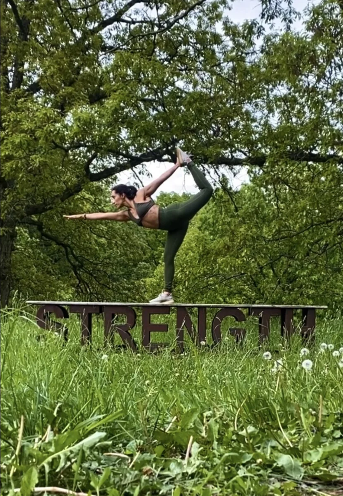

Ritual Underground
Jazmin Esparza
Jazmin’s work brings together yoga, meditation, and intentional gatherings. Explore her REC profile to learn about her approach to mindful movement, then visit Ritual Underground for current offerings and inquiries.
Meet Jazmin Esparza →